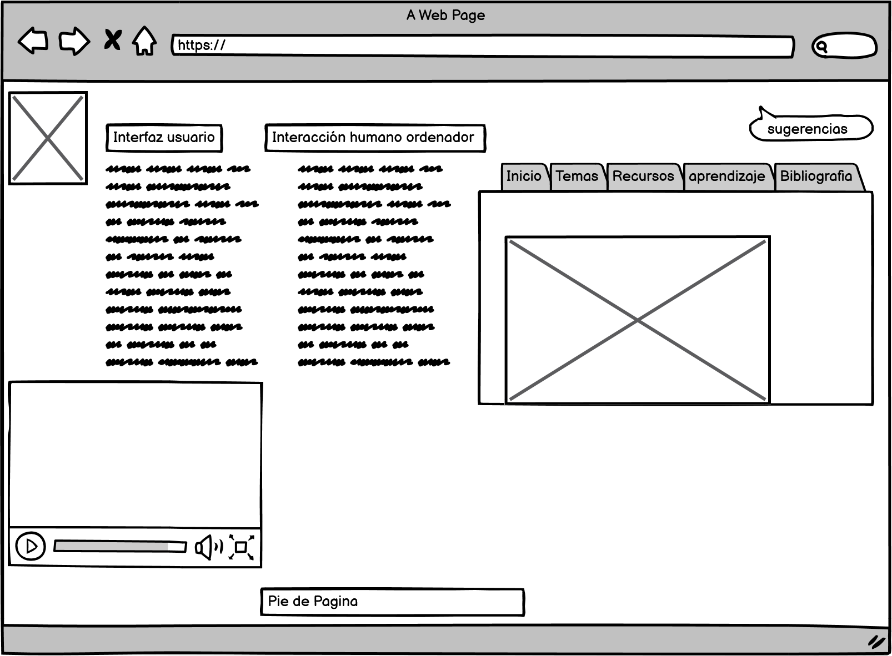

Borrador
IPO
Introducción
La interacción entre personas y ordenadores se realiza por medio de una interfaz, esta es la plataforma o base de contacto entre ambos, en esas interfaces creadas y diseñadas es donde los usuarios y ordenadores trasmiten información, datos,ordenes y creatividad.https://elibro-net.bibliotecavirtual.unad.edu.co/es/ereader/unad/56326?page=26
Que es la IPO
interfaz persona ordenador
*¿Que es una interfzaz *conceptos *lineamientos
*Desarrollo de interfaces(implementacion) *Tipos de usuarios *ActualidadReferentes bibliograficos
i Saltiveri, T. G. (2012). Diseño de sistemas interactivos centrados en el usuario. Editorial UOC. (Pág. 211 a 264). Recuperado de https://elibro-net.bibliotecavirtual.unad.edu.co/es/ereader/unad/56326?page=212
